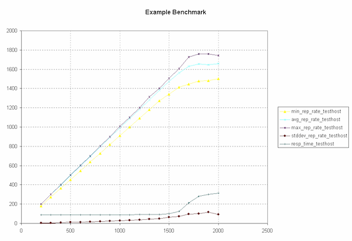
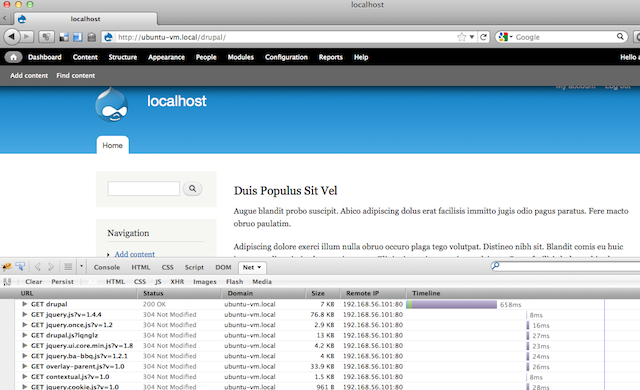

bud@thinkcube.com | twitter @geekaholic
The folk story is that Apache was named after "A-patchy-server", which was the result of NCSA httpd server being patched a lot. The project was started by Brian Behlendorf
Today, Apache is still the most popular web server out there running more than half of the websites on the net. It is actively developed by the Apache Software Foundation along with many other software projects.
Besides its primary function of being a website, Apache can also be configured as a reverse proxy for load balancing.
We assume your working on Ubuntu. Translate to your favorite distro accordingly.
The easiest method of installing Apache along with PHP and MySQL (aka LAMP) is to use the tasksel command.
tasksel
Alternatively install each package manually:
apt-get install apache2 libapache2-mod-php5 mysql-server
In order to test out Apache performance as we tune it, it is good to setup a real world full fledged CMS such as Drupal.
Autobench is a handy script to stress test a webserver by sending an increasing number of requests. It works by calling the httperf tool iteratively with increasing parameters.
Download autobench and follow directions to compile.
In order to plot graphs, you need to install gnuplot via apt. As of this writing, the script used to plot the graph has a bug calling the current version of gnuplot and requires the following minor modification.
$ sudo vi
which bench2graph
line ~78 should be
echo set style data linespoints >> gnuplot.cmd
Lets benchmark our standard Apache setup to get an idea of default performance.
autobench --single_host --host1 localhost --uri1 /drupal --quiet \
--low_rate 20 --high_rate 200 --rate_step 20 --num_call 10 \
--num_conn 5000 --timeout 5 --file results.tsv
Basically the above will test a single host, localhost/drupal by sending it 20 connections per second, each having 10 requests up to 200 connections per second incrementing by 20. The total number of connections are capped at 5000 while any request that takes more than 5 seconds to respond is considered unsuccessful.
Using the result.tsv file and the included bench2graph utility, you can plot a graph into a postscript file.
bench2graph results.tsv results.ps

You can decrease network overhead and make pages load faster, there by reducing the amount of time a client is connected by compressing pages using gzip. All modern browser support rendering compressed files.
In order to benchmark its effect, you can install a tool such as Firebug on the client side.

Enable the mod_deflate module. On Ubuntu :
a2enmod deflate && a2enmod headers
Then we'll configure deflate to compress everything except images.
sudo vi /etc/apache2/modules-enabled/deflate.conf
1 <Location />
2 # Insert filter
3 SetOutputFilter DEFLATE
4
5 # Don't compress images
6 SetEnvIfNoCase Request_URI .(?:gif|jpe?g|png)$ no-gzip dont-vary
7
8 # Make sure proxies don't deliver the wrong content
9 Header append Vary User-Agent env=!dont-vary
10
11 </Location>
There are a few key parameters that can be tuned:
ps -eafly |grep apache2|awk '{print $8}'|sort -n
Use free to figure out how much memory is available. Cache is also considered free memory but you might want to leave some and not assume all cache will be used.
free
By deviding free memory by the average memory used by an Apache thread, you can estimate the number of MaxClients.
$ ps -eafly |grep apache2|awk '{print $8}'|sort -n
816
3896
3896
3896
3896
20844
$ free
total used free shared buffers cached
Mem: 508904 447344 61560 0 141136 213468
-/+ buffers/cache: 92740 416164
Swap: 407544 4364 403180
Memory avail ~= 60000 (free) + 100000 (cached) ~= 160 MB and Memory per thread ~= 4 MB Then a safe value for MaxClients = 40
We can improve PHP performance by
Fortunately we can get the benefit of both using PHP APC, which is a PHP accellerator!
apt-get install php-apc
You can verify installation by loading a php page having phpinfo(); and searching for apc. Or if you have php5-cli installed:
php -r "phpinfo();" | grep apc
Memcached is a distributed cache for storing key-value pairs in memory for faster access with reduced trips to the database. Some popular PHP apps can use memcache if available. memcached does not instantly accellerate PHP!
apt-get install memcached php5-memcache
service memcached start
DirectoryIndex file list as short as possible..htaccess via AllowOverride noneOptions FollowSymLinks to simplify file access process in Apachemod_rewrite or at least complex regexsbud@thinkcube.com | twitter @geekaholic
In terms of scaling the web server there are few options.
Basically the easiest to setup. Scaling is a matter of buying a better server or upgrading it!
Separate DB from App, as a result each can be scaled separately.
Load balancer (aka reverse proxy) will route requests betwen multiple backend HTTP servers while caching results.
Data scalability is beyond the scope of this presentation.
It is good to isolate the data from the app by hosting it on a separate server. This was the two aspects can be scaled independantly. Some methods to consider:
In this setup, the reverse server is what the user will contact while the real webserver can be hidden behind a private network.
Enable required modules for caching reverse proxy.
a2enmod proxy
a2enmod proxy_connect
a2enmod proxy_http
a2enmod cache
vi /etc/apache2/modules-enabled/proxy.conf
1 <Proxy *>
2 AddDefaultCharset off
3 Order deny,allow
4 Deny from all
5 Allow from all
6 </Proxy>
7 ProxyVia On
Next we configure an empty virtual host that is configured to the public site. But instead of showing the document root we do a reverse proxy.
vi /etc/apache2/sites-available/public-domain.com
1 <VirtualHost *:80>
2
3 ServerName your-public-domain.com
4
5 <Proxy *>
6 Order deny,allow
7 Allow from all
8 </Proxy>
9
10 ProxyPass / http://your-private-domain.com/
11 ProxyPassReverse / http://your-private-domain.com/
12
13 </VirtualHost>
a2ensite public-domain.com
service apache2 reload
mod_php) inside process as PHP is not asynchronousIn this setup we put Nginx as the frontend http accellerator and Apache as the backend app server. If you want to run this on the same physical server you'll need to either change the Apache port from 80 to another value or bind and Nginx to their own IP addresses with the same server.
Listen 8080
or using the ip address
Listen 127.0.0.1:8080
Now we're ready to install Nginx
sudo apt-get install nginx
Nginx uses a different format for defining virtual hosts than Apahche.
1 <VirtualHost>
2 DocumentRoot "/usr/local/www/mydomain.com"
3 ServerName mydomain.com
4 ServerAlias www.mydomain.com
5 CustomLog /var/log/httpd/mydomain_access.log common
6 ErrorLog /var/log/httpd/mydomain_error.log
7 ...
8 </VirtualHost>
becomes...
1 server {
2 root /usr/local/www/mydomain.com;
3 server_name mydomain.com www.mydomain.com;
4
5 # by default logs are stored in nginx's log folder
6 # it can be changed to a full path such as /var/log/...
7 access_log logs/mydomain_access.log;
8 error_log logs/mydomain_error.log;
9 ...
10 }
The following example will server all static content via nginx while redirect dynamic content (php) to Apache
1 server {
2 listen 80 default;
3 server_name localhost;
4
5 access_log /var/log/nginx/localhost.access.log;
6
7 location / {
8 root /var/www;
9 index index.html index.htm;
10 }
11
12 ## Parse all .php file in the /var/www directory
13 location ~ .php$ {
14 # these two lines tell Apache the actual IP of the client being forwarded
15
16 proxy_set_header X-Real-IP $remote_addr;
17 proxy_set_header X-Forwarded-For $remote_addr;
18
19 # this next line adds the Host header so that apache knows which vHost to serve
20
21 proxy_set_header Host $host;
22
23 # And now we pass back to apache
24 proxy_pass http://127.0.0.1:8080;
25
26 }
27 }
bud@thinkcube.com | twitter @geekaholic
| Table of Contents | t |
|---|---|
| Exposé | ESC |
| Full screen slides | e |
| Presenter View | p |
| Source Files | s |
| Slide Numbers | n |
| Toggle screen blanking | b |
| Show/hide slide context | c |
| Notes | 2 |
| Help | h |